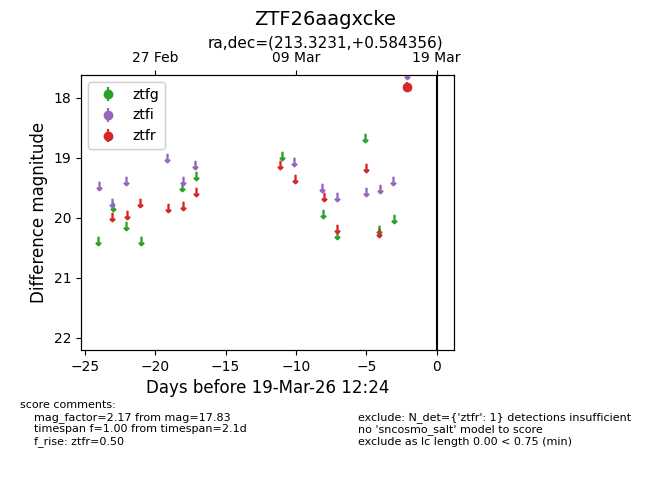
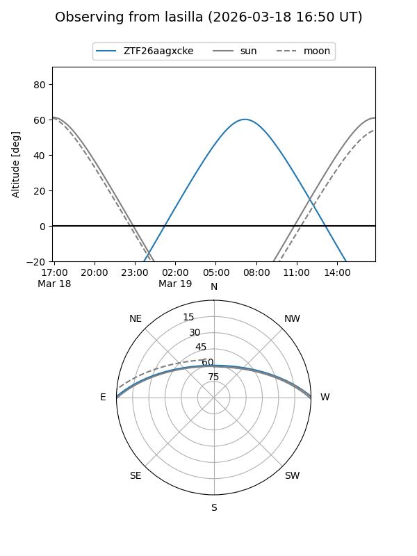
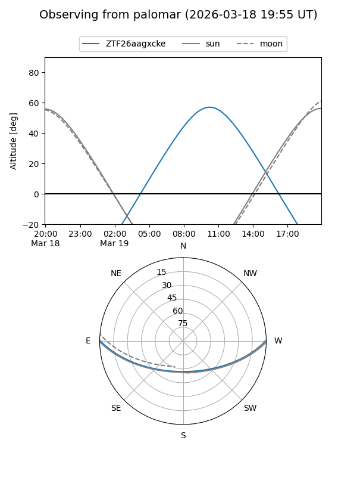

ZTF26aagxcke
Target ZTF26aagxcke at 2026-03-19 12:26
Aliases and brokers:
FINK: link
Lasair: link
ALeRCE: link
alt names
ZTF26aagxcke (ztf,fink_ztf)
Coordinates:
equatorial (ra, dec) = 213.3231,+0.58436
equatorial (HMS+DMS) = 14:13:17.56,+00:35:03.68
galactic (l, b) = (342.8320,+56.97487)
Flags:
Photometry:
last ztfr=17.83
1 ztfr detections
Lightcurve

Visibility


Additional plots